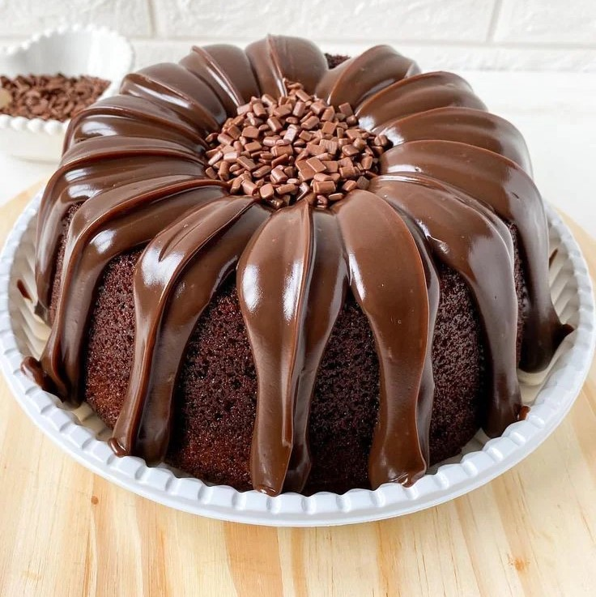
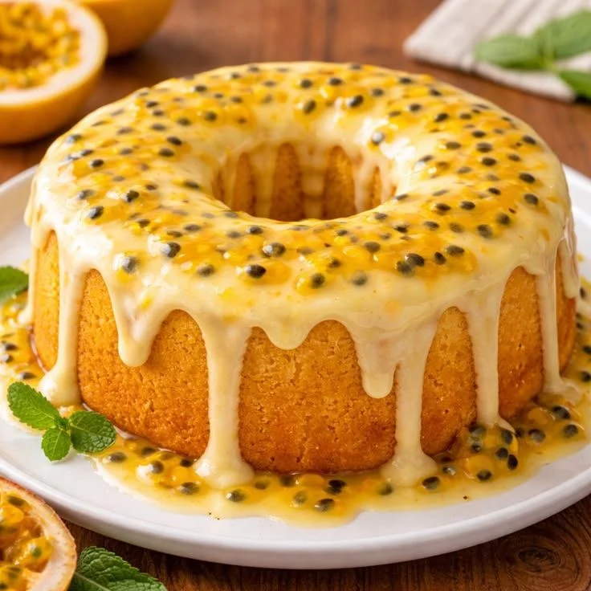
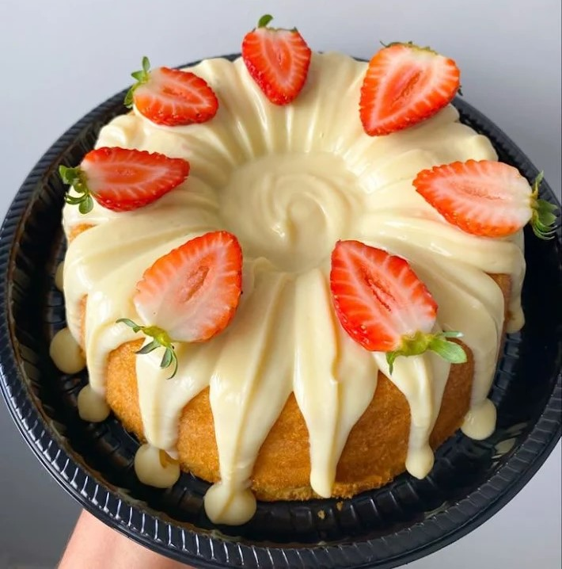
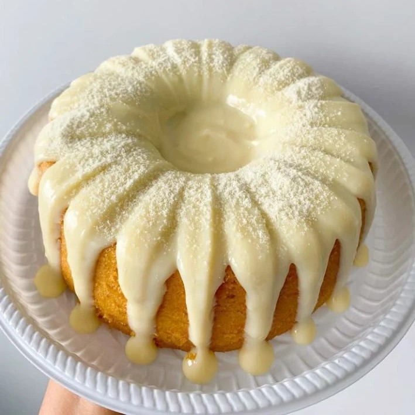

Conheça nossos bolos

Cenoura
Massa super fofinha de cenouras frescas com uma camada generosa de calda cremosa de brigadeiro. O clássico caseiro perfeito para o seu café!s

Chocolate
Massa super fofinha de cenouras frescas com uma camada generosa de calda cremosa de brigadeiro. O clássico caseiro perfeito para o seu café!s

Maracujá
Massa super fofinha de cenouras frescas com uma camada generosa de calda cremosa de brigadeiro. O clássico caseiro perfeito para o seu café!s

Morango
Massa super fofinha de cenouras frescas com uma camada generosa de calda cremosa de brigadeiro. O clássico caseiro perfeito para o seu café!s

Ninho
Massa super fofinha de cenouras frescas com uma camada generosa de calda cremosa de brigadeiro. O clássico caseiro perfeito para o seu café!s
Laranja
Massa super fofinha de cenouras frescas com uma camada generosa de calda cremosa de brigadeiro. O clássico caseiro perfeito para o seu café!s